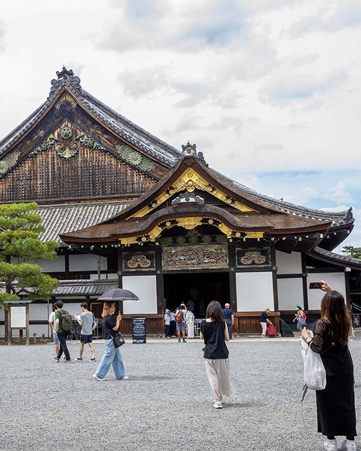
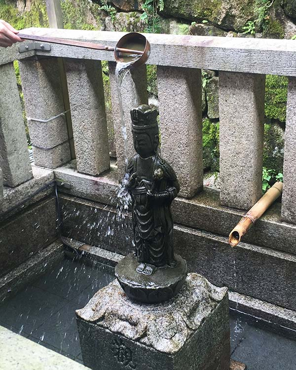

點按圖片翻背面，點按圖片外翻回正面

二条城
這座城堡是幕府將軍至京都天皇時的住所，也是德川幕府「大政奉還」的地點，見證了日本歷史脫離封建時代的一刻。
二条城內的特色建築又稱鶯聲地板，因為人行走於迴廊地板上時會發出酷似夜鶯鳴叫的聲音。
因為二条城重大的歷史意義，它被列為聯合國世界遺產。
二条城內的特色建築又稱鶯聲地板，因為人行走於迴廊地板上時會發出酷似夜鶯鳴叫的聲音。
因為二条城重大的歷史意義，它被列為聯合國世界遺產。

平等院
座落於京都府宇治寺，平等院因為其精巧的佛教建築被列為聯合國世界遺產。
平等院中的鳳凰堂，擁有木造阿彌陀如來坐像1座、浮雕菩薩像52軀、壁畫14面，表現出平安時代佛教藝術之美。
鳳凰堂即為日幣10元硬幣上的建築，因此常見旅客將硬幣與建築同框拍攝。
平等院中的鳳凰堂，擁有木造阿彌陀如來坐像1座、浮雕菩薩像52軀、壁畫14面，表現出平安時代佛教藝術之美。
鳳凰堂即為日幣10元硬幣上的建築，因此常見旅客將硬幣與建築同框拍攝。

清水寺
作為聯合國世界遺產，清水寺以正殿前擁有1000年以上歷史的木造舞台聞名。清水舞台由139根高12公尺的櫸木支撐，且沒有使用任何釘子。
偌大的寺廟中，只有少數拜殿讓我覺得內心平靜，其中一處就是照片中的偏殿觀音像。香客們用水清洗觀音石像以祈求內心清明。
偌大的寺廟中，只有少數拜殿讓我覺得內心平靜，其中一處就是照片中的偏殿觀音像。香客們用水清洗觀音石像以祈求內心清明。

南禪寺
這是日本禪宗最早由皇室建照的寺院，內有照片中的三門、方丈庭園及水路閣等指標性建築。
三門的上層「五鳳樓」有釋迦如來與十六羅漢像、大坂之陣戰死者位牌等。
方丈庭園的枯山水、借景等技法表現出日本的藝術及文化內涵。
水路閣則是一座紅磚拱橋外型的琵琶湖疏水設施，其異國風情使之成為打卡知名景點。
三門的上層「五鳳樓」有釋迦如來與十六羅漢像、大坂之陣戰死者位牌等。
方丈庭園的枯山水、借景等技法表現出日本的藝術及文化內涵。
水路閣則是一座紅磚拱橋外型的琵琶湖疏水設施，其異國風情使之成為打卡知名景點。